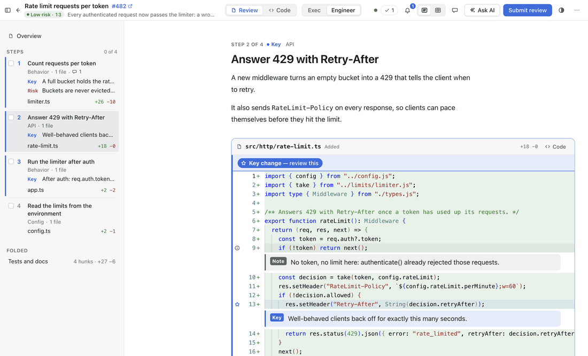
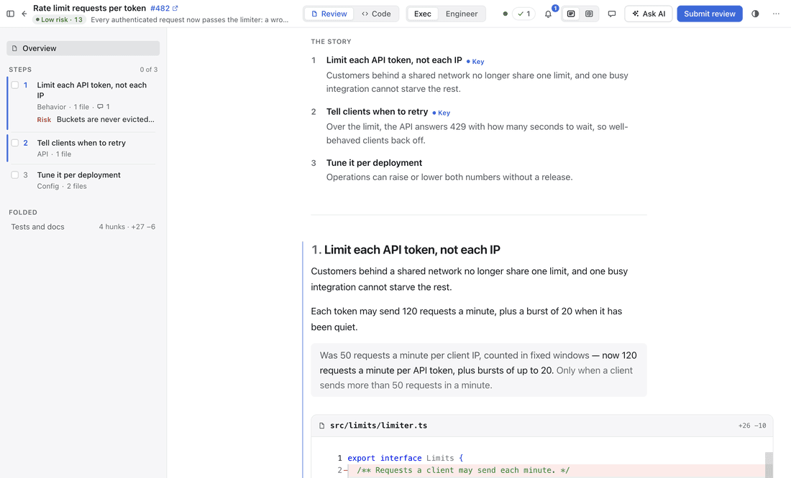
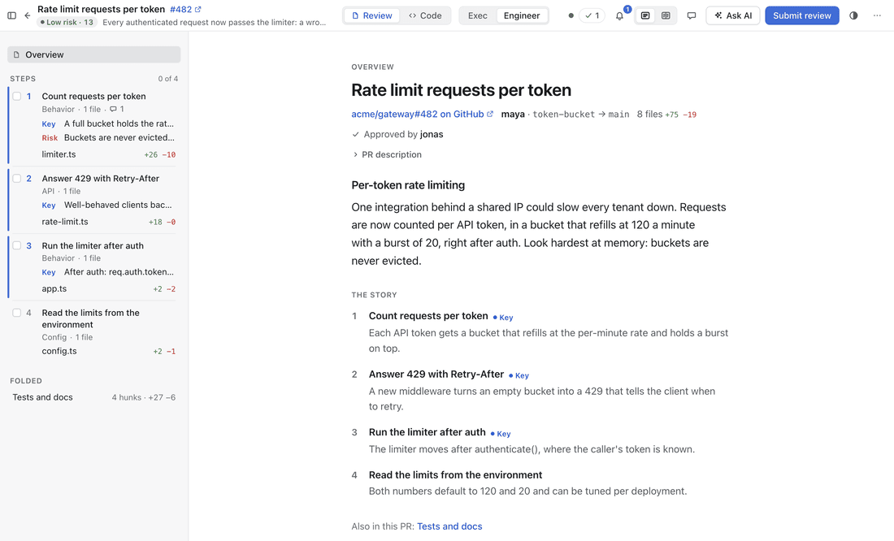
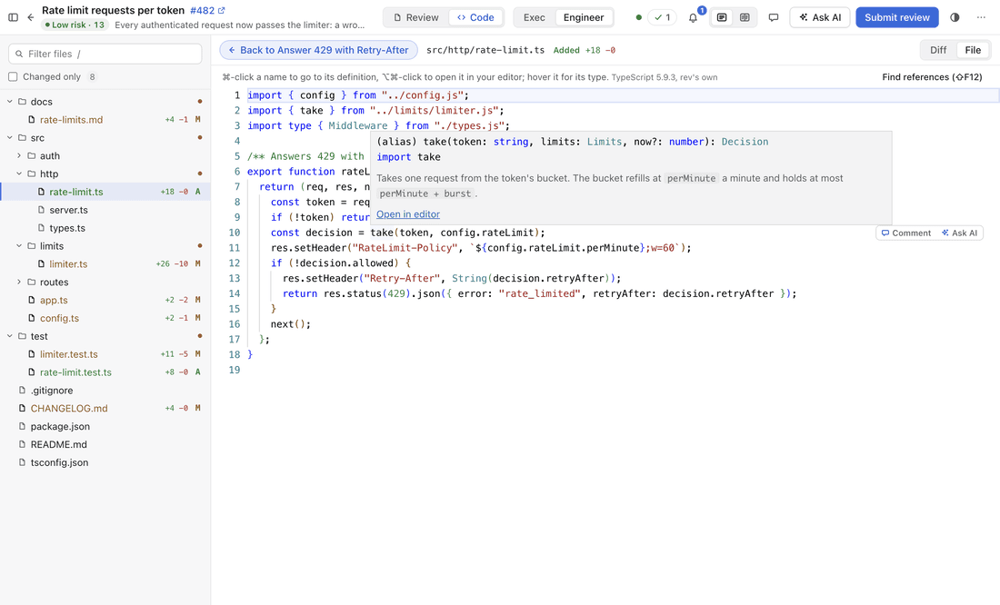
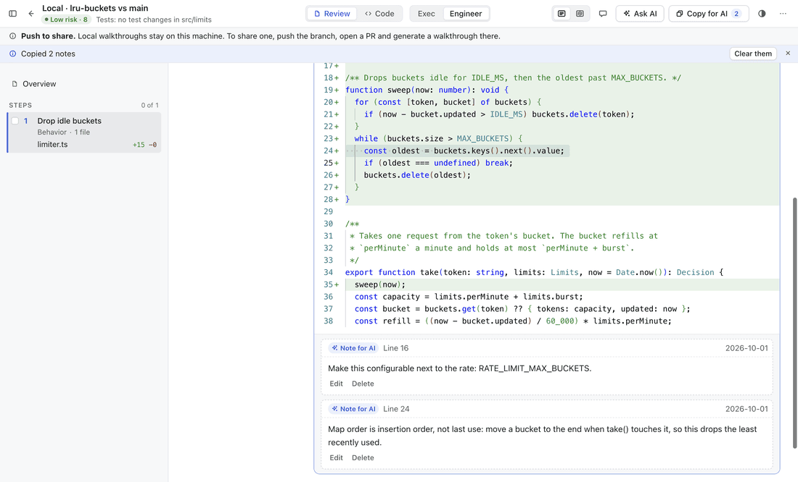
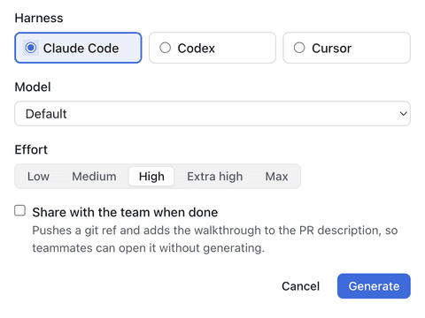
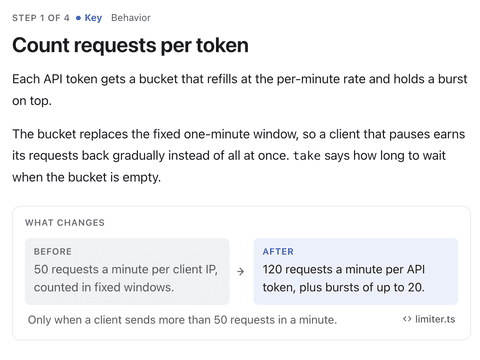

Only the important code, as a story
Every walkthrough comes as an exec summary, to decide in a minute, and an engineer walkthrough, to review the code that matters step by step. Everything else is folded away.


rev for macOS
rev turns a GitHub pull request into a guided review: a walkthrough, written by your own coding agent, that tells the change as a story and shows only the code that matters.
The repository is private: sign in to GitHub with an account that has access to redocly-contrib/rev to download.

Features
Every walkthrough comes as an exec summary, to decide in a minute, and an engineer walkthrough, to review the code that matters step by step. Everything else is folded away.


When the story is not enough, open the whole file or Cmd-click a name to go to its definition, without leaving the review.

rev
Risk: Low · Size: spans 6 areas
Open in rev · install rev
$ rev open 482
$ rev
Click “Open in rev” in the pull request's description, or run rev in your terminal.
One person generates the walkthrough and shares it in the pull request. Everyone else just opens it and reads.
Signed in to GitHub as alice
rev works through gh, the GitHub CLI you are already signed in to. No accounts, no tokens, no servers.
Claude Code
Codex
Cursor
Claude Code, Codex or Cursor writes the walkthrough on your Mac: your subscription, your model.
Open a folder or a branch to walk through your own work. Leave notes for AI on the lines that need another pass, then Copy for AI and paste them into your agent.

How it works
From its “Open in rev” link, by pasting its link, or with rev open.

Your agent reads the change and writes both walkthroughs. Share them, and nobody else has to wait.

Step through the story, comment on the lines, and submit your review to GitHub.
Install
The disk image for Macs with Apple Silicon. Sign in to GitHub with an account that has access to redocly-contrib/rev first, as the repository is private.
Open the disk image and drag rev into the Applications folder.
The build is not notarized yet, so macOS asks once. Right-click rev in Applications and choose Open; on macOS 15 and newer, click Open Anyway in System Settings › Privacy & Security.
rev commandThe command line tool comes with the app: choose rev › Install Command Line Tool.